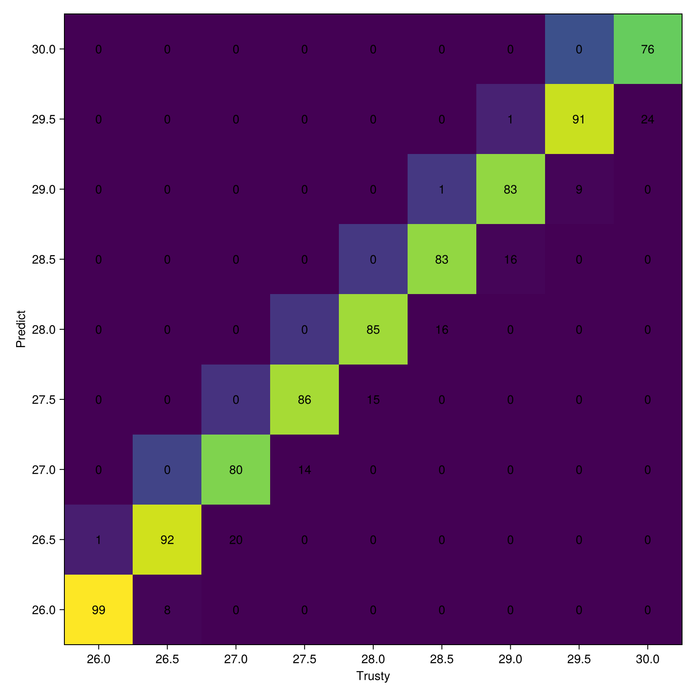

Examples
Application with Flux.jl
Flux is a user-friendly machine learning library in Julia that provides a wide range of functionalities. In this example, we demonstrate how to use Flux.jl together with RecurrenceMicrostatesAnalysis.jl to train a multi-layer perceptron (MLP) to classify a dynamical system, based on [6].
Importing Required Packages
using Flux
using DifferentialEquations
using RecurrenceMicrostatesAnalysisGenerating Data from the Lorenz System
We use a Lorenz system integrated with DifferentialEquations.jl as our data source:
function lorenz(σ, ρ, β; u0 = rand(3), tspan = (0.0, 5000.0))
function lorenz!(du, u, p, dt)
x, y, z = u
du[1] = σ * (y - x)
du[2] = x * (ρ - z) - y
du[3] = x * y - β * z
end
prob = ODEProblem(lorenz!, u0, tspan)
sol = solve(prob, dt = 0.00001)
## Apply the vicinity (important!)
return prepare(sol, 0.2; transient = 40000, K = 500)
endExperiment Settings
ρ_cls = [26.0, 26.5, 27.0, 27.5, 28.0, 28.5, 29.0, 29.5, 30.0] # Our classes
num_samples_to_test = 100 # Samples to test
num_samples_to_train = 400 # Samples to train
epoches = 80 # Epoches to train
learning_rate = 0.002 # Learning rate
motif_n = 3 # Motif sizeDefining the Model
model = Chain(
Dense(2^(motif_n * motif_n) + 2 => 512, identity),
Dense(512 => 256, selu),
Dense(256 => 64, selu),
Dense(64 => length(ρ_cls)),
softmax
)
model = f64(model) # We use Float64 precision 😄Preparing the Dataset
Our input features include the threshold, recurrence entropy, and recurrence distribution:
data_train = zeros(Float64, 2^(motif_n * motif_n) + 2, num_samples_to_train, length(ρ_cls))
data_test = zeros(Float64, 2^(motif_n * motif_n) + 2, num_samples_to_test, length(ρ_cls))
labels_train = zeros(Float64, num_samples_to_train, length(ρ_cls))
labels_test = zeros(Float64, num_samples_to_test, length(ρ_cls))
for j in eachindex(ρ_cls)
labels_train[:, j] .= ρ_cls[j]
labels_test[:, j] .= ρ_cls[j]
for i in 1:num_samples_to_train
serie = lorenz(10.0, ρ_cls[j], 8.0/3.0)
th, s = find_parameters(serie, motif_n)
data_train[1, i, j] = th
data_train[end, i, j] = s
data_train[2:end-1, i, j] .= distribution(serie, th, motif_n)
end
for i in 1:num_samples_to_test
serie = lorenz(10.0, ρ_cls[j], 8.0/3.0)
th, s = find_parameters(serie, motif_n)
data_test[1, i, j] = th
data_test[end, i, j] = s
data_test[2:end-1, i, j] .= distribution(serie, th, motif_n)
end
end
## Reshape to match the expected input format for Flux.
data_train = reshape(data_train, 2^(motif_n * motif_n) + 2, num_samples_to_train * length(ρ_cls))
data_test = reshape(data_test, 2^(motif_n * motif_n) + 2, num_samples_to_test * length(ρ_cls))
labels_train = reshape(labels_train, num_samples_to_train * length(ρ_cls))
labels_test = reshape(labels_test, num_samples_to_test * length(ρ_cls))Training the MLP
labels_train = Flux.onehotbatch(labels_train, ρ_cls)
labels_test = Flux.onehotbatch(labels_test, ρ_cls)
loader = Flux.DataLoader((data_train, labels_train), batchsize = 32, shuffle = true)
opt = Flux.setup(Flux.Adam(learning_rate), model)
for epc in 1:epoches
for (x, y) in loader
_, grads = Flux.withgradient(model) do m
y_hat = m(x)
Flux.crossentropy(y_hat, y)
end
Flux.update!(opt, model, grads[1])
end
endEvaluation
We evaluate the trained model using a confusion matrix and obtain an accuracy of 86.1%: 